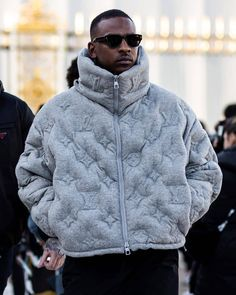
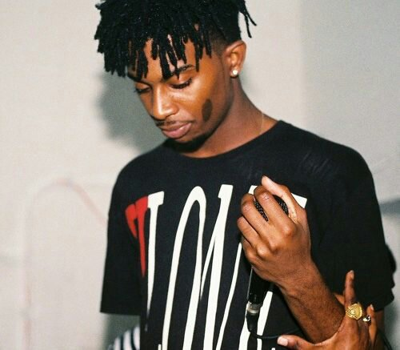
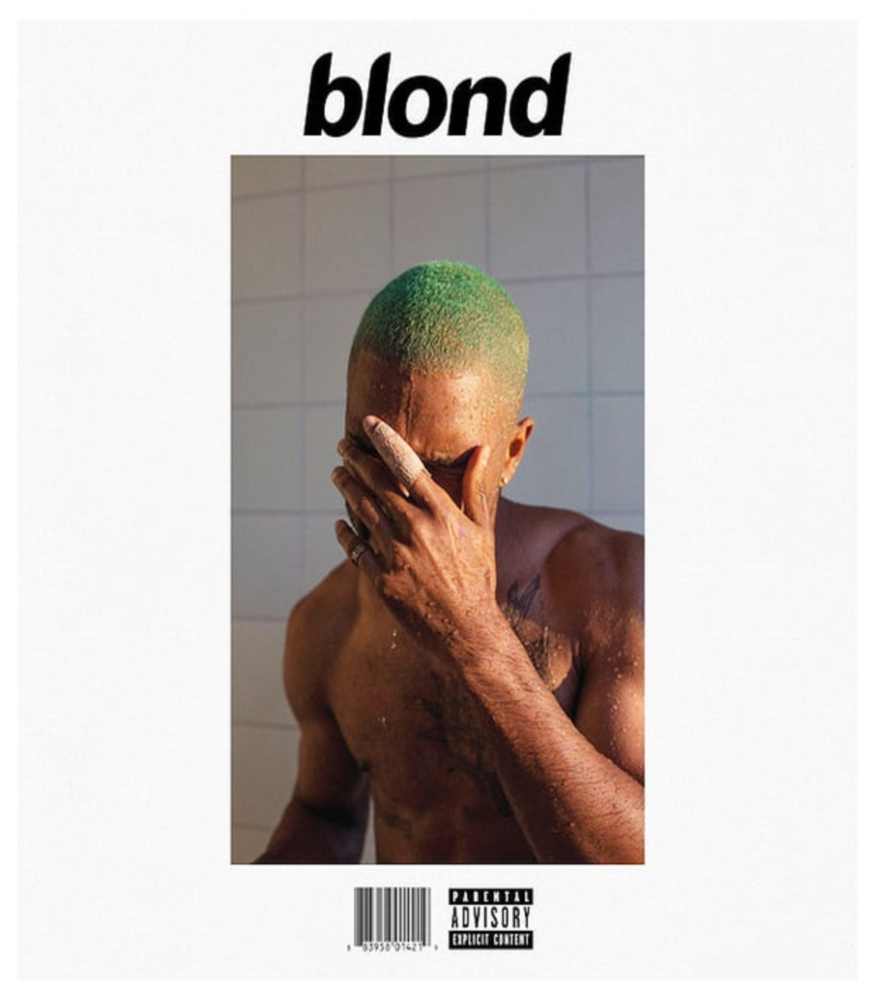

| Central Cee é atualmente o maior nome quando se comenta a respeito de uk rap, lançou recentemente seu album westwild, recomendamos, todas suas faixas são quentes | |
|  | Skepta sempre esta no auge, impressionante, seja no rap ou nas capas de revistas de moda, posando para marcas como louis vuiton e prada, o rapper nunca fica pra trás, remomendamos para ter o conhecimento do antigo rap uk |
| Dave é um rapper londrino que recentemente emoldurou sua placa de 100M de reproduções na faixa Clash, é um hit que não vai sair da sua playlist, e toda vez que ela tocar você vai se sentir | |
|  | Carti não é Europeu, mesmo tendo passado a vida em uk, ele se considera mais americano que londrino, o raper lançou no final do ano passado a mix tape RED que recebeu alguns premios, todas as faixas são interessantes, mas se voce é novo no quesito adlibs, melhor ir se acostumando |
|  | Segundo os ouvintes, em nossas pesquisas, o rapper Frank Ocean não está mais entre os favoritos, pelo fato de sua musica não ser tão atual, acompanhando a moda atual de movimento de danças e ser um pouco mais meloso, mas não deixa de ser uma das melhores compositores |